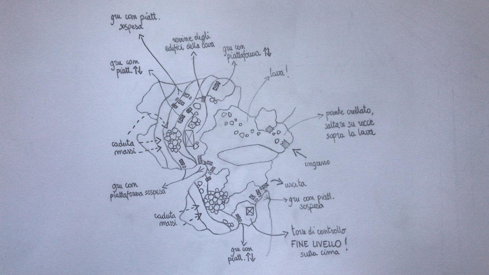
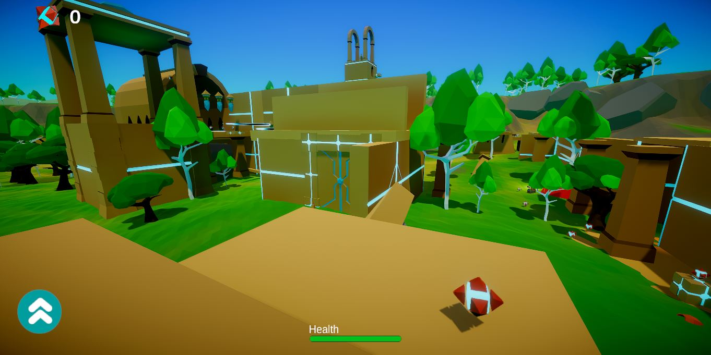
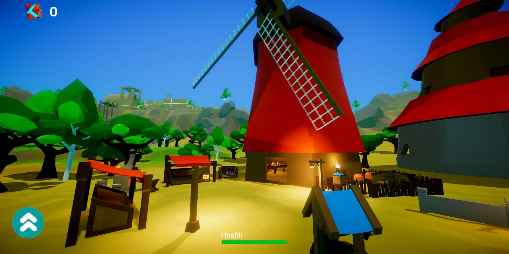
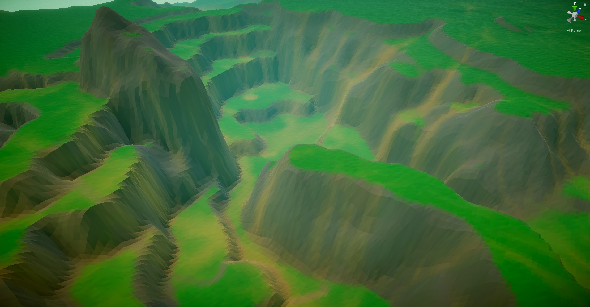
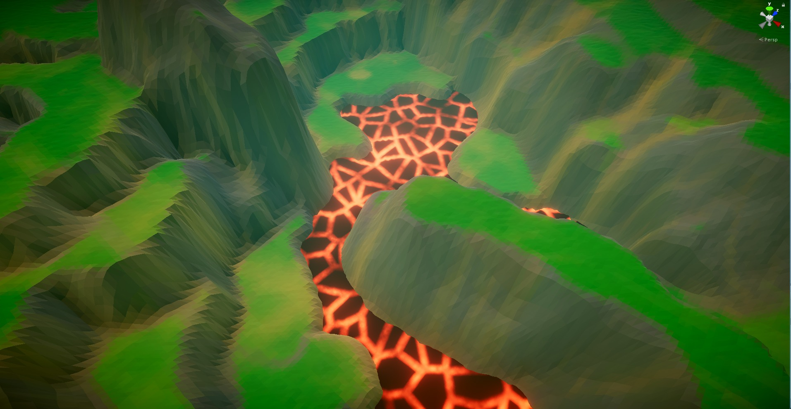
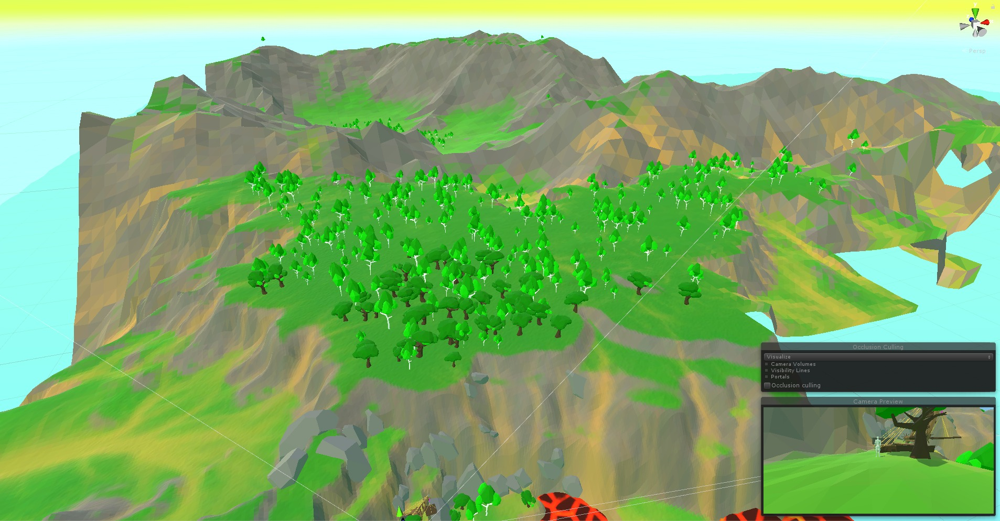
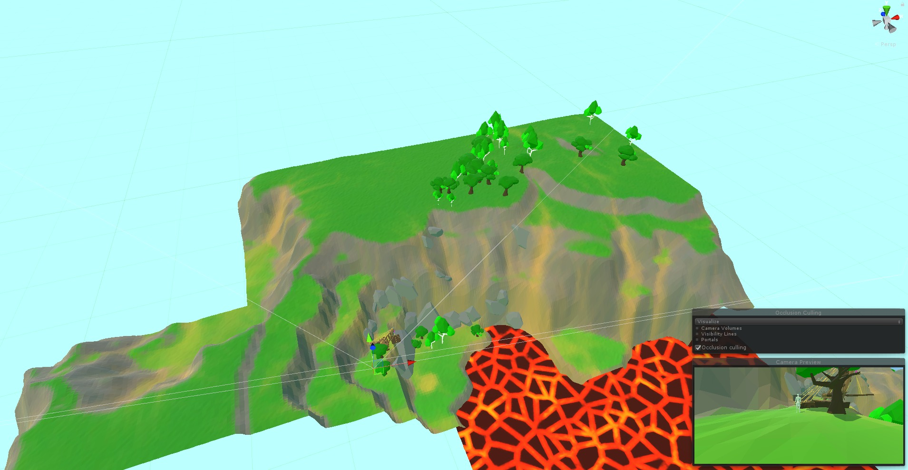

We've been working on the layout of the entire earth zone and all of the specific "levels" contained in it. In this post, we'll be focusing on the Quarry Level. The earth zone is basically a small town sorrounded by ancient ruins and structures, including the Quarry, these will be the "levels". It is important to us to give a different palette and art style to these ancient buildings, we want the player to feel safe in the town and to not feel safe in the ruins. Swapping the palette and style helps achieve this and also makes sense lore-wise. Here's the layout of the Quarry:
These screenshot are from one of the ruins levels and the main town respectively:
 Reshaping the terrain for the Quarry
As stated in the previous post, if we need to change the terrain, we're gonna have to change the unity version of the standard terrain and then use a script to re-generate the faceted chunks. After doing this, this is what we get:

Since this is a pretty drastic change to a part of the terrain, we need to regenerate the texture so that it fits better with the new cliffs and slopes. To do this we export the raw terrain file into World Machine and re-generate the bitmap. We then go back into unity, generate the faceted chunks and apply the texture:
Fine tuning the rock placement
The first change I made to the rock placement algorithm was using a Gaussian distribution for the size instead of a random number in the specified range. While that is a solid approach I ultimately decided to do things differently. The old version would scale the rocke based on the altitude: the higher up it was, the smaller it would be. This approach however had a problem:

The algorihm would make Rock 2 bigger because it's much closer to sea level. That might seem like a good thing but in reality, Rock 1 shouldn't be much smaller than Rock 2 because locally, it's on a pretty high and steep cliff. The modified algorithm will check the sorroundings of every rock to find a local minimum (or low point) and scale the rock appropriately. It's pretty difficult to get a screenshot of the full range of sizes but here's what it looks like:

My rock and tree placement script has a way to delete all objects and trees but no way of deciding which to keep so I needed to find a way to make the rocks and trees I liked stick around. I decided to make all of these objects a child of the "level" object. This worked but I soon realised that if I was generating trees or rocks again for another section of the map, it would clutter all my other areas with new ones. To fix this, I decided to write a script that would destroy any tree or rock it would collide with assuming it wasn't part of the level itself:
Back to the Quarry
The next thing missing is lava, it's not so simple to pull off so what I did was to go to substance designer and generate a texture for it. Then I used shader magic to displace every vertex based on the color value of each pixel in the texture. The final touch was then to add a very slow and subtle movement using a simple sine function:
Now let's add the rocks and the trees. And voilà!

Occlusion and frustrum culling
The eagle-eyed will have noticed that the terrain looks a lot sharper. That is simply because I upped the number of vertices of every chunk The all terrain is now a whopping 32 Million vertices. Naturally that is way more than we want to display on the screen at any given time and the LOD system is helping reduce that number by a lot. What we can do to reduce it even more is to add more levels of LOD (which are autmagically generated) and then start thinking about occlusion and frustrum culling.
I discovered that Unity does this automatically without any work from my part so the only thing that's left is occlusion culling. Unity provides a pretty solid system of generating volumes that will appear/disappear based on the camera's visibility. What's left to do is to assign to every level a bounding box. This is useful because sometimes if the player goes inside a building, the game will cull everything because it doesn't understand what's supposed to be showing. Once that's fixed we're done! Here's what the camera was rendering before:
and this is after:
Notice the player is exactly in the same position in both cases. As you can see in the stats tab, we've reduced the number of triangles drawn by quite a lot. Basically the LOD systems takes it from around 10 million to 700k and we then reduce that further by using occlusion culling. The improvement might seem small but remember it will get significantly bigger the more levels and objects there are.
What about gameplay?
If you've read these two posts you might think the gameplay is completely absent. In truth, it's mostly there, toghether with obstacles, UI, combat system and inventory system. I will be doing a dive through some of these in future posts while I work on making them more robust and feature rich. Until then, all I can give you is a very small peak:

In case you're wondering, the moving platform DOES WORK correctly, I just missed cause I'm bad at my own game :) .